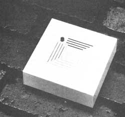
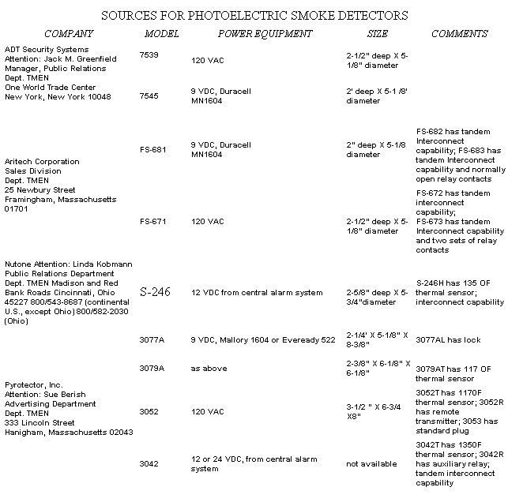

In MOTHER's neck of the woods, a jaunt through neighborhood hardware and department stores would be enough to convince almost anyone that all smoke detectors contain radioactive material. In fact, not only were we unable to turn up a single alternative to the readily available ionization type of detector in a store-to-store survey, but we were amazed to find out that the owners of most of the firms were unaware that any other sort is even made.
As a result of our frustration, then, we were quite pleased when reader Robert Westcott sent us some information on the subject ... which included a long list of companies that were reported to sell or produce an alternative to the ionizing devices: a photoelectric smoke detector. Subsequently, we wrote to all the firms on that list-as well as to a few others we unearthed ourselves-and waited to see what was available. (Considering what we'd foundor, to be more accurate, not found-in our own region, we were quite prepared to learn that all such businesses had expired.)
Well, much to our surprise, we got four solid affirmative replies (we also received a few negative ones, while at least a dozen of the inquiries were neither answered nor returned). What's more, we learned a fair amount about both ionizing and photoelectric detectors ... information that we think you'll find quite interesting.
The word radiation carries a whole lot of emotion with it these days. But, as you're about to find out, there are more factors to be considered when choosing ionizing and photoelectric detectors than the presence of a substance that emits alpha radiation. In fact, the differences in performance of the two types of detectors could be far more important to your family's well-being.
To understand these differences, you'll need a general knowledge of how the two kinds of devices work. An ionization smoke detector uses a small amount of a radioactive substance-americium-241-to fill a detection chamber with ions. These particles support a very small charge of electricity, which passes between two poles and keeps the alarm circuit open (no sound). When smoke enters the chamber, however, the ions bond to the smoke particles and the current's path is disrupted ... thereby triggering the alarm. Because these detectors depend on ion bonding, they react most quickly to the small, but numerous, particles typically given off by hot fires. (Burning paper in a wastebasket is one commonly cited example.)
Furthermore, ionizing detectors tend to give false alarms when exposed to the fumes produced by cooking or other household activities. Dual chamber models help alleviate the problem, but some studies have shown that, even at their best, ionization smoke detectors "cry wolf" almost twice as often as does the alternative type of device.
Photoelectric detectors employ a light emitting diode (LED) and a receiving photocell, which are set into a chamber that must be light-, but not smoke-, tight. Smoke particles enter the detection chamber through a convoluted path and scatter the beam from the LED toward the receiver. When the photocell catches enough light to reach its "threshold of detection", the alarm sounds.
Because large particles do a very effective job of scattering the light from the LED, photoelectric smoke detectors are particularly sensitive to smoldering fires ... such as might occur if a lighted cigarette fell onto a mattress. In fact, a photoelectric detector might respond to a smoky fire as many as 20 minutes sooner than would an ionization device. (On the other hand, the latter unit might pick up the fumes from an actual blaze as many as 30 seconds sooner than the photoelectric unit would.)
Obviously, then, each type of detector has its own particular capabilities, and many experts recommend that you have at least one of each variety. In the case of most fires, however, enough of both the large and small particles will be present to trigger either type of detector, but-and this is a very important "but"-in the rare case where a smoldering fire doesn't produce sufficient particles to set off an ionizing detector, the lag in alarm could be long enough to jeopardize human life. Furthermore, smoldering fires are the primary cause of fire-related fatalities in the U.S., because they often produce large volumes of toxic gases without giving warning signs. We (and many experts), then, believe that if only one detector is to be used, the photoelectric alarm might provide a greater margin of safety than would an ionizing device.
Though both ionization and photoelectric smoke detectors can operate on either batteries or household current, and their power demands are similar, the photoelectric device may require photocell replacement after being in use for five to seven years (a warning light indicates a weakening of the light-sensitive receiver). Ionizing detectors, on the other hand, should last for quite some time ... since their operating medium-americium-241-has a radioactive half-life of 458 years!
There is, of course, still that one other factor to consider ... just how much of a threat does the radiation from an ionizing detector present? Well, as you may know, many questions about the danger posed by low-level radiation have yet to be answered. Nevertheless, we can say that such devices contain only a small amount of radioactive material (usually less than one microcurie), and if this type of detector is used (and performs) properly, the doses received by nearby individuals should be very small. There may, however, be greater risk [1] if the foil packaging should fail (because of intentional misuse or inadvertent damage, such as might occur if the unit is exposed to fire), [2] during the manufacturing process (risk to workers), or [3] upon disposal (the firms that make these devices all request that old ionizing detectors be returned to them).
We checked the emission level from a three-year-old G.E. ionizing detector with a Radiation Alert Monitor 4 (which is available from Solar Electronics, Dept. TMEN, 156 Drake Lane, Surnmertown, Tennessee 38383 ... for $150, plus $5 shipping) and obtained a reading of 0.05 milliroentgens per hour (mr/hr.) at a distance of 4 inches ... barely enough to be measurable. You might compare this number with the statistics presented in the article "The Hidden Dangers of Mantle Lamps", which appeared on page 58 of MOTHER NO. 78. In general, the results noted there were slightL y higher, but were still far below the level of natural background radiation, the amount received from a diagnostic X-ray, or even the exposure that occurs during a high-altitude cross-country airplane trip. We'd like to emphasize again, however, that no one can honestly claim to know that any exposure to low-level radiation-no matter how small-is "safe".
Whether the radiation you might receive from an ionizing smoke detector presents a cancer risk of one in ten thousand, a million, or a billion, an undetected fire would likely present a far greater danger. You should have a smoke detector in your home: An ionizing type would be better than none at all ... a photoelectric detector would represent a further improvement ... and the best approach would be to have both.
As we mentioned early in this article, it's not always easy to locate a photoelectric smoke detector to buy. However, the chart that accompanies this article includes companies that either responded to our letter of inquiry or were contacted by phone. All of them should be able to help you find a photoelectric detector.
In addition, there are two national distribution sources that may be of help. Sears, Roebuck and Co. lists both photoelectric detectors and combination photoelectric and ionizing detectors in their Spring 1983 catalog. The other distributor is W.W. Grainger, Inc., a nationwide wholesale house for hardware stores and industry. You might be able to purchase one of the BRK photoelectric detectors that this firm carries, by asking your local hardware store to place an order for you.
|
 |
 |
|